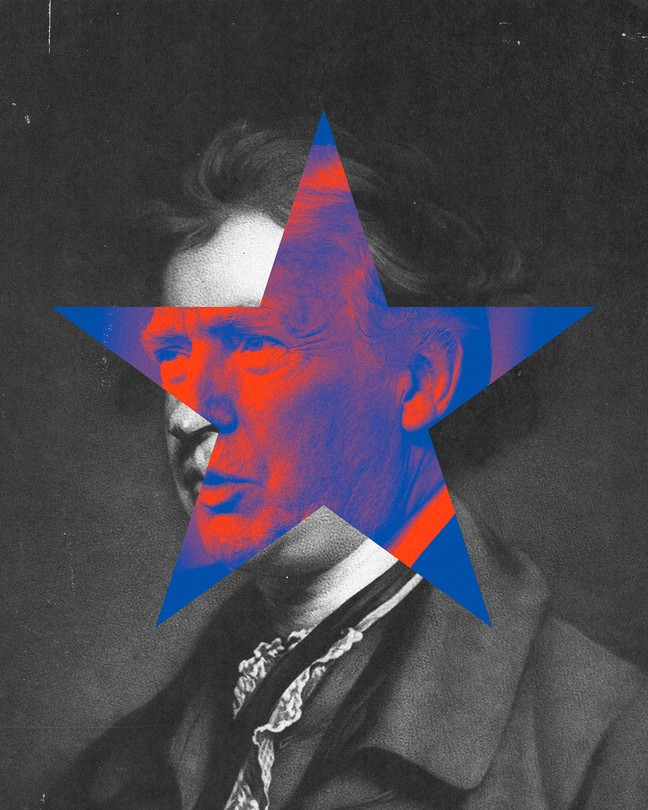
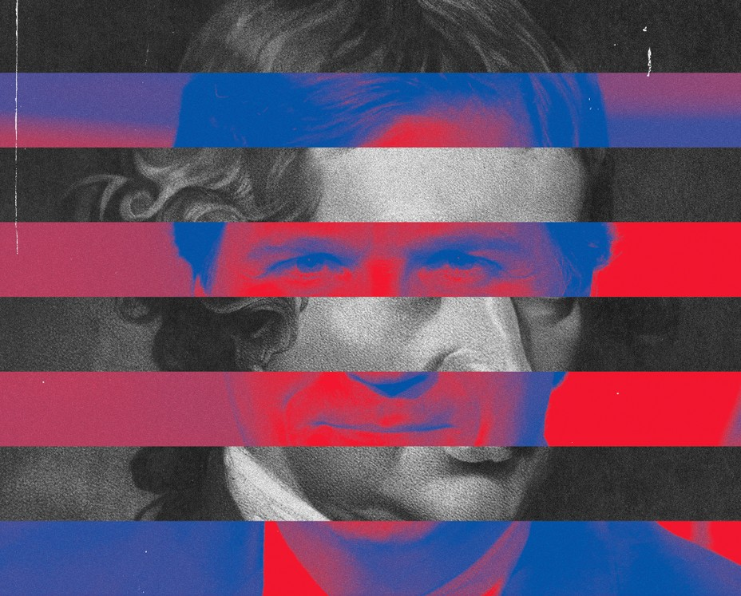

| 上一项 | 文章 | 章节 | 下一项 |
What Happened to American Conservatism?
The rich philosophical tradition I fell in love with has been reduced to Fox News and voter suppression.
by David Brooks

I fell in love with conservatism in my 20s. As a politics and crime reporter in Chicago, I often found myself around public-housing projects like Cabrini-Green and the Robert Taylor Homes, which had been built with the best of intentions but had become nightmares. The urban planners who designed those projects thought they could improve lives by replacing ramshackle old neighborhoods with a series of neatly ordered high-rises.
But, as the sociologist Richard Sennett, who lived in part of the Cabrini-Green complex as a child, noted, the planners never really consulted the residents themselves. They disrespected the residents by turning them into unseen, passive spectators of their own lives. By the time I encountered the projects they were national symbols of urban decay.
Back then I thought of myself as a socialist. But seeing the fallout from this situation prompted a shocking realization: This is exactly what that guy I read in college had predicted. Human society is unalterably complex, Edmund Burke argued. If you try to reengineer it based on the simplistic schema of your own reason, you will unintentionally cause significant harm. Though Burke was writing as a conservative statesman in Britain some 200 years earlier, the wisdom of his insight was apparent in what I was seeing in the Chicago of the 1980s.
I started reading any writer on conservatism whose book I could get my hands on—Willmoore Kendall, Peter Viereck, Shirley Robin Letwin. I can only describe what happened next as a love affair. I was enchanted by their way of looking at the world. In conservatism I found not a mere alternative policy agenda, but a deeper and more resonant account of human nature, a more comprehensive understanding of wisdom, an inspiring description of the highest ethical life and the nurturing community.
What passes for “conservatism” now, however, is nearly the opposite of the Burkean conservatism I encountered then. Today, what passes for the worldview of “the right” is a set of resentful animosities, a partisan attachment to Donald Trump or Tucker Carlson, a sort of mental brutalism. The rich philosophical perspective that dazzled me then has been reduced to Fox News and voter suppression.
David Brooks: The terrifying future of the American right
I recently went back and reread the yellowing conservatism books that I have lugged around with me over the decades. I wondered whether I’d be embarrassed or ashamed of them, knowing what conservatism has devolved into. I have to tell you that I wasn’t embarrassed; I was enthralled all over again, and I came away thinking that conservatism is truer and more profound than ever—and that to be a conservative today, you have to oppose much of what the Republican Party has come to stand for.
This essay is a reclamation project. It is an attempt to remember how modern conservatism started, what core wisdom it contains, and why that wisdom is still needed today.
Our political categories emerged following the wars of religion of the 16th, 17th, and early 18th centuries. It was a time of bitterness, polarization, and culture war—like today, but a thousand times worse. The Reformation had divided Europe into hostile Catholic and Protestant camps. The wars were a series of massacres and counter-massacres, vicious retributions, and even more vicious counter-retributions. Blaise de Monluc, a French commander, was a characteristic figure. In 1562, as Sarah Bakewell recounts in her book How to Live, he was sent to pacify the city of Bordeaux after a Protestant mob had attacked the town hall during a riot. Monluc’s method was mass murder. He hanged Protestants in the street without trial. His suppression was so bloodthirsty that his troops ran out of gallows and had to hang people from trees. So many Protestants were killed and thrown into a well that their bodies entirely filled the deep shaft. In 1571, Monluc was shot in the face, and he spent the rest of his life behind a mask—a disfigured man from a disfigured age.
Eventually many Europeans became exhausted and appalled. The urgent task was this: how to construct a society that wouldn’t devolve into bitter polarization and tribal bloodbaths. One camp, which we associate with the French Enlightenment, put its faith in reason. Some thought a decent social order can be built when primitive passions like religious zeal are marginalized and tamed; when individuals are educated to use their highest faculty, reason, to pursue their enlightened self-interest; and when government organizes society using the tools of science.
Another camp, which we associate with the Scottish or British Enlightenment of David Hume and Adam Smith, did not believe that human reason is powerful enough to control human selfishness; most of the time our reason merely rationalizes our selfishness. They did not believe that individual reason is powerful enough even to comprehend the world around us, let alone enable leaders to engineer society from the top down. “We are afraid to put men to live and trade each on his own private stock of reason, because we suspect that this stock in each man is small,” Burke wrote in Reflections on the Revolution in France.
From the April 2004 issue: Christopher Hitchens on Edmund Burke, reactionary prophet
This is one of the core conservative principles: epistemological modesty, or humility in the face of what we don’t know about a complex world, and a conviction that social change should be steady but cautious and incremental. Down the centuries, conservatives have always stood against the arrogance of those who believe they have the ability to plan history: the French revolutionaries who thought they could destroy a society and rebuild it from scratch, but who ended up with the guillotine; the Russian and Chinese Communists who tried to create a centrally controlled society, but who ended up with the gulag and the Cultural Revolution; the Western government planners who thought they could fine-tune an economy from the top, but who ended up with stagflation and sclerosis; the European elites who thought they could unify their continent by administrative fiat and arrogate power to unelected technocrats in Brussels, but who ended up with a monetary crisis and populist backlash.
If conservatives don’t think reason is strong enough to order a civilization, what human faculty do they trust enough to do the job? Here we have to resort to a classic 18th-century concept—the “sentiments.” An early book of Burke’s was on aesthetics. When you look at a painting, you don’t have to rationally calculate its beauty or its power, the sadness or the joy it inspires. Sentiments are automatic aesthetic and emotional judgments about things. They assign value. They tell you what is beautiful and what is ugly, what to want and what is worth wanting, where to go and what to aim for.
Rationalists put a lot of faith in “I think therefore I am”—the autonomous individual deconstructing problems step by logical step. Conservatives put a lot of faith in the latent wisdom that is passed down by generations, cultures, families, and institutions, and that shows up as a set of quick and ready intuitions about what to do in any situation. Brits don’t have to think about what to do at a crowded bus stop. They form a queue, guided by the cultural practices they have inherited.
The most important sentiments are moral sentiments. Conservatism certainly has an acute awareness of sin—selfishness, greed, lust. But conservatives also believe that in the right circumstances, people are motivated by the positive moral emotions—especially sympathy and benevolence, but also admiration, patriotism, charity, and loyalty. These moral sentiments move you to be outraged by cruelty, to care for your neighbor, to feel proper affection for your imperfect country. They motivate you to do the right thing.
Your emotions can be trusted, the conservative believes, when they are cultivated rightly. “Reason is, and ought only to be the slave of the passions,” David Hume wrote in his Treatise of Human Nature. “The feelings on which people act are often superior to the arguments they employ,” the late neoconservative scholar James Q. Wilson wrote in The Moral Sense.
The key phrase, of course, is cultivated rightly. A person who lived in a state of nature would be an unrecognizable creature, scarcely fit for life in society, locked up within and slave to his own unruly desires. The only way to govern such an unformed creature would be through a prison state. If a person has not been trained by a community to tame his passions from within, then the state would have to continuously control him from without.
True conservatism’s great virtue is that it teaches us to be humble about what we know; it gets human nature right.
Fortunately, people do not generally bring themselves up alone. The state of nature as imagined by John Locke or Jean-Jacques Rousseau has never existed. People are raised within families and communities, traditions and nations—within the civilizing webs of a coherent social order. Over time, humans have evolved arrangements, traditions, and customs that not only help them address practical problems, but also help them form their children into decent human beings. The methods and mores that have stood the test of time have usually endured for good reason. “The world is often wiser than any philosopher,” the journalist Walter Bagehot wrote in the mid-19th century.
Some of the wisdom passed down through the ages is transmitted through books and sermons. But most of the learning happens by habituation. We are formed within families, churches, communities, schools, and professional societies. Each institution has its own stories, standards of excellence, ways of doing things. When you join the Marines, you don’t just learn to shoot a rifle; you absorb an entire ethos that will both help you complete the tasks you will confront and mold you into a certain sort of person: fierce against foes, loyal to friends, faithful to the Corps.
If someone asked you how to treat a woman whose husband has just died, your instinctive response would probably not be “Induce her to host an open house for the next week.” But the Jewish shiva customs are a brilliant set of practices to help people collectively deal with grief, in part by giving everybody something basic and purposeful to do. The shiva rituals nurture a certain way of caring for one another, instantiate a certain sort of family life. They help turn individuals into a people. Institutions instill habits, habits become virtues, virtues become character.
Burkean conservatism inspired me because its social vision was not just about laws, budgets, and technocratic plans; its vision was about soulcraft, about how we build institutions that produce good citizens—people who are moderate in their zeal, sympathetic to the marginalized, reliable in their diligence, and willing to sacrifice the private interest for public good. Conservatism resonated with me because it recognized that culture is more important than the state in driving history. “Manners are of more importance than laws,” Burke wrote.
Upon them, in a great measure, the laws depend. The law touches us but here and there, and now and then. Manners are what vex or soothe, corrupt or purify, exalt or debase, barbarize or refine us, by a constant, steady, uniform, insensible operation, like that of the air we breathe in. They give their whole form and color to our lives. According to their quality, they aid morals, they supply them, or they totally destroy them.
Conservatives thus spend a lot of time defending the “little platoon[s],” as Burke called them, the communities and settled villages that are the factories of moral and emotional formation. If, as Burke believed, reason alone cannot find the one true answer to any social problem, each community must improvise its own set of solutions to intricate human concerns. The conservative seeks to defend this wonderful heterogeneity from the forces of bigness and the centralizing arrogance of rationalism—to protect these little platoons when government tries to perform roles best done in families, when the federal government takes power from local government, when big corporations suck the vitality out of local economies.
From the May 2008 issue: Jonathan Rauch on Edmund Burke and the betrayal of conservatism
True conservatism’s great virtue is that it teaches us to be humble about what we think we know; it gets human nature right, and understands that we are primarily a collection of unconscious processes, deep emotions, and clashing desires. Conservatism’s profound insight is that it’s impossible to build a healthy society strictly on the principle of self-interest. It’s an illusion, as T. S. Eliot put it, to think that a society in which people don’t have to be good can thrive. Life is essentially a moral enterprise, and the health of your community will depend on how well it does moral formation—how well it nurtures ordered inner lives and helps balance sentiments, desires, and motivations. Finally, conservatism welcomes you into a great procession down the ages. Society “is a partnership in all science,” Burke wrote,
a partnership in all art; a partnership in every virtue, and in all perfection. As the ends of such a partnership cannot be obtained in many generations, it becomes a partnership not only between those who are living, but between those who are living, those who are dead, and those who are to be born.
By the early 1990s, I was living in Brussels, covering Europe, Africa, and the Middle East for The Wall Street Journal and continuing my conservative self-education. I became fascinated by a British statesman named Enoch Powell. If you were to design the perfect conservative, Powell would seem to be it—a classics scholar, veteran, poet, and man of faith, and the product of the finest Tory training grounds the U.K. had to offer. And yet in 1968, Powell had given his notorious “Rivers of Blood” speech, which was blatant in its racism and shocking in its anti-immigrant message. How, I wondered, had conservatism, which was developed in response to sectarian war, produced a statesman who was trying to start one?
Read: “Rivers of Blood” and the legacy of a speech that divided Britain
I realized that every worldview has the vices of its virtues. Conservatives are supposed to be epistemologically modest—but in real life, this modesty can turn into a brutish anti-intellectualism, a contempt for learning and expertise. Conservatives are supposed to prize local community—but this orientation can turn into narrow parochialism, can produce xenophobic and racist animosity toward immigrants, a tribal hostility toward outsiders, and a paranoid response when confronted with even a hint of diversity and pluralism. Conservatives are supposed to cherish moral formation—but this emphasis can turn into a rigid and self-righteous moralism, a tendency to see all social change as evidence of moral decline and social menace. Finally, conservatives are supposed to revere the past—but this reverence for what was can turn into an abject deference to whoever holds power. When I looked at conservatives in continental Europe, I generally didn’t like what I saw. And when I looked at people like Powell, I was appalled.

Fortunately, I didn’t have to live within the confines of blood-and-soil European conservatism; I had the American kind. Because conservatism is so rooted in the local manners and mores of each community, there is no such thing as international conservatism. Each society has its own customs and moral practices, and so each society has its own brand of conservatism.
American conservatism descends from Burkean conservatism, but is hopped up on steroids and adrenaline. Three features set our conservatism apart from the British and continental kinds. First, the American Revolution. Because that war was fought partly on behalf of abstract liberal ideals and universal principles, the tradition that American conservatism seeks to preserve is liberal. Second, while Burkean conservatism puts a lot of emphasis on stable communities, America, as a nation of immigrants and pioneers, has always emphasized freedom, social mobility, the Horatio Alger myth—the idea that it is possible to transform your condition through hard work. Finally, American conservatives have been more unabashedly devoted to capitalism—and to entrepreneurialism and to business generally—than conservatives almost anywhere else. Perpetual dynamism and creative destruction are big parts of the American tradition that conservatism defends.
If you look at the American conservative tradition—which I would say begins with the capitalist part of Hamilton and the localist part of Jefferson; extends through the Whig Party and Abraham Lincoln to Theodore Roosevelt; continues with Eisenhower, Goldwater, and Reagan; and ends with Mitt Romney’s 2012 presidential campaign—you don’t see people trying to revert to some past glory. Rather, they are attracted to innovation and novelty, smitten with the excitement of new technologies—from Hamilton’s pro-growth industrial policy to Lincoln’s railroad legislation to Reagan’s “Star Wars” defense system.
American conservatism has always been in tension with itself. In its prime—the half century from 1964 to 2012—it was divided among libertarians, religious conservatives, small-town agrarians, urban neoconservatives, foreign-policy hawks, and so on. And for a time, this fractiousness seemed to work.
American conservatives were united, during this era, by their opposition to communism and socialism, to state planning and amoral technocracy. In those days I assumed that this vibrant, forward-looking conservatism was the future, and that the Enoch Powells of the world were the receding roar of a sick reaction. I was wrong. And I confess that I’ve come to wonder if the tension between “America” and “conservatism” is just too great. Maybe it’s impossible to hold together a movement that is both backward-looking and forward-looking, both in love with stability and addicted to change, both go-go materialist and morally rooted. Maybe the postwar American conservatism we all knew—a collection of intellectuals, activists, politicians, journalists, and others aligned with the Republican Party—was just a parenthesis in history, a parenthesis that is now closing.
Donald Trump is the near-opposite of the Burkean conservatism I’ve described here. How did a movement built on sympathy and wisdom lead to a man who possesses neither? How did a movement that put such importance on the moral formation of the individual end up elevating an unashamed moral degenerate? How did a movement built on an image of society as a complex organism give rise to the simplistic dichotomies of manipulative populism? How did a movement based on respect for the wisdom of the past end up with Trump’s authoritarian campaign boast “I alone can fix it,” perhaps the least conservative sentence it is possible to utter?
The reasons conservatism devolved into Trumpism are many. First, race. Conservatism makes sense only when it is trying to preserve social conditions that are basically healthy. America’s racial arrangements are fundamentally unjust. To be conservative on racial matters is a moral crime. American conservatives never wrapped their mind around this. My beloved mentor, William F. Buckley Jr., made an ass of himself in his 1965 Cambridge debate against James Baldwin. By the time I worked at National Review, 20 years later, explicit racism was not evident in the office, but racial issues were generally overlooked and the GOP’s flirtation with racist dog whistles was casually tolerated. When you ignore a cancer, it tends to metastasize.
Second, economics. Conservatism is essentially an explanation of how communities produce wisdom and virtue. During the late 20th century, both the left and the right valorized the liberated individual over the enmeshed community. On the right, that meant less Edmund Burke, more Milton Friedman. The right’s focus shifted from wisdom and ethics to self-interest and economic growth. As George F. Will noted in 1984, an imbalance emerged between the “political order’s meticulous concern for material well-being and its fastidious withdrawal from concern for the inner lives and moral character of citizens.” The purpose of the right became maximum individual freedom, and especially economic freedom, without much of a view of what that freedom was for, nor much concern for what held societies together.
American conservatism began with the capitalist part of Hamilton and the localist part of Jefferson and ended with Mitt Romney in 2012.
But perhaps the biggest reason for conservatism’s decay into Trumpism was spiritual. The British and American strains of conservatism were built on a foundation of national confidence. If Britain was a tiny island nation that once bestrode the world, “nothing in all history had ever succeeded like America, and every American knew it,” as the historian Henry Steele Commager put it in 1950. For centuries, American and British conservatives were grateful to have inherited such glorious legacies, knew that there were sacred things to be preserved in each national tradition, and understood that social change had to unfold within the existing guardrails of what already was.
By 2016, that confidence was in tatters. Communities were falling apart, families were breaking up, America was fragmenting. Whole regions had been left behind, and many elite institutions had shifted sharply left and driven conservatives from their ranks. Social media had instigated a brutal war of all against all, social trust was cratering, and the leadership class was growing more isolated, imperious, and condescending. “Morning in America” had given way to “American carnage” and a sense of perpetual threat.
David Brooks: Collapsing levels of trust are devastating America
I wish I could say that what Trump represents has nothing to do with conservatism, rightly understood. But as we saw with Enoch Powell, a pessimistic shadow conservatism has always lurked in the darkness, haunting the more optimistic, confident one. The message this shadow conservatism conveys is the one that Trump successfully embraced in 2016: Evil outsiders are coming to get us. But in at least one way, Trumpism is truly anti-conservative. Both Burkean conservatism and Lockean liberalism were trying to find ways to gentle the human condition, to help society settle differences without resort to authoritarianism and violence. Trumpism is pre-Enlightenment. Trumpian authoritarianism doesn’t renounce holy war; it embraces holy war, assumes it is permanent, in fact seeks to make it so. In the Trumpian world, disputes are settled by raw power and intimidation. The Trumpian epistemology is to be anti-epistemology, to call into question the whole idea of truth, to utter whatever lie will help you get attention and power. Trumpism looks at the tender sentiments of sympathy as weakness. Might makes right.
On the right, especially among the young, the populist and nationalist forces are rising. All of life is seen as an incessant class struggle between oligarchic elites and the common volk. History is a culture-war death match. Today’s mass-market, pre-Enlightenment authoritarianism is not grateful for the inherited order but sees menace pervading it: You’ve been cheated. The system is rigged against you. Good people are dupes. Conspiracists are trying to screw you. Expertise is bogus. Doom is just around the corner. I alone can save us.
What’s a Burkean conservative to do? A lot of my friends are trying to reclaim the GOP and make it a conservative party once again. I cheer them on. America needs two responsible parties. But I am skeptical that the GOP is going to be home to the kind of conservatism I admire anytime soon.
Trumpian Republicanism plunders, degrades, and erodes institutions for the sake of personal aggrandizement. The Trumpian cause is held together by hatred of the Other. Because Trumpians live in a state of perpetual war, they need to continually invent existential foes—critical race theory, nongendered bathrooms, out-of-control immigration. They need to treat half the country, metropolitan America, as a moral cancer, and view the cultural and demographic changes of the past 50 years as an alien invasion. Yet pluralism is one of America’s oldest traditions; to conserve America, you have to love pluralism. As long as the warrior ethos dominates the GOP, brutality will be admired over benevolence, propaganda over discourse, confrontation over conservatism, dehumanization over dignity. A movement that has more affection for Viktor Orbán’s Hungary than for New York’s Central Park is neither conservative nor American. This is barren ground for anyone trying to plant Burkean seedlings.
I’m content, as my hero Isaiah Berlin put it, to plant myself instead on the rightward edge of the leftward tendency—in the more promising soil of the moderate wing of the Democratic Party. If its progressive wing sometimes seems to have learned nothing from the failures of government and to promote cultural stances that divide Americans, at least the party as a whole knows what year it is. In 1980, the core problem of the age was statism, in the form of communism abroad and sclerotic, dynamism-sapping bureaucracies at home. In 2021, the core threat is social decay. The danger we should be most concerned with lies in family and community breakdown, which leaves teenagers adrift and depressed, adults addicted and isolated. It lies in poisonous levels of social distrust, in deepening economic and persisting racial disparities that undermine the very goodness of America—in political tribalism that makes government impossible.
From the December 2001 issue: David Brooks on Red America vs. Blue America
There is nothing intrinsically anti-government in Burkean conservatism. “It is perhaps marvelous that people who preach disdain for government can consider themselves the intellectual descendants of Burke, the author of a celebration of the state,” George F. Will once wrote. To reduce the economic chasm that separates class from class, to ease the financial anxiety that renders life unstable for many people, to support parenting so that children can grow up with more stability—these are the goals of a party committed to ameliorating, not exploiting, a growing sense of hopelessness and alienation, of vanishing opportunity. Daniel Patrick Moynihan’s brilliant dictum—which builds on a Burkean wisdom forged in a world of animosity and corrosive flux—has never been more worth heeding than it is now: The central conservative truth is that culture matters most; the central liberal truth is that politics can change culture.
This article appears in the January/February 2022 print edition with the headline “I Remember Conservatism.” When you buy a book using a link on this page, we receive a commission. Thank you for supporting The Atlantic.
This article was downloaded by calibre from https://www.theatlantic.com/magazine/archive/2022/01/brooks-true-conservatism-dead-fox-news-voter-suppression/620853/
| 上一项 | 文章 | 章节 | 下一项 |